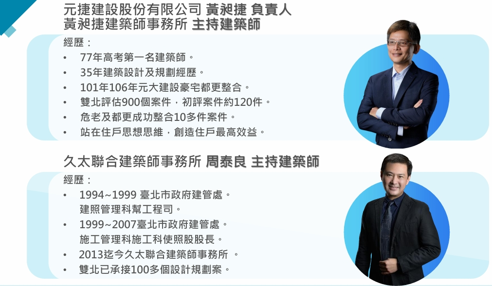
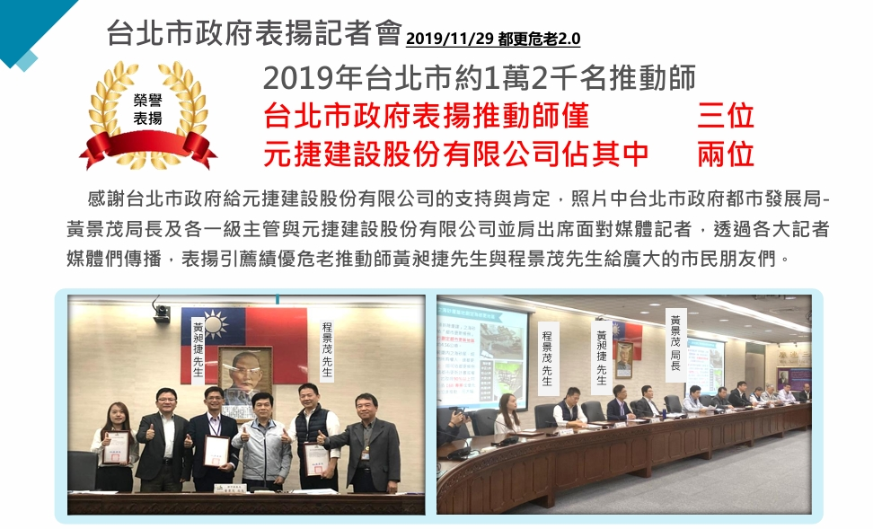

HUANG / ARCHITECT
黃昶捷建築師
黃昶捷建築師事務所
主持建築師｜元捷建設股份有限公司負責人
- 民國77年建築師高考第一名。
- 35年建築設計及規劃經歷。
- 民國101年、106年參與元大建設豪宅都更整合。
- 雙北評估約900個案件，初評案件約120件。
- 危老及都更成功整合10多件案件。
站在住戶立場思考，創造住戶最高效益。
以專業凝聚信任，以經驗實踐承諾。
讓地主安心，讓建築的價值長久延續。
以整合經驗理解地主需求，以設計與工程專業規劃未來生活。認識與元捷同行的兩位建築師。

黃昶捷建築師事務所
主持建築師｜元捷建設股份有限公司負責人
站在住戶立場思考，創造住戶最高效益。
久太聯合建築師事務所
主持建築師
從建照、施工管理到建築設計，累積完整的專業實務經驗。
查看和平東路危老案 ↗專業分工・嚴格把關・為地主權益與建築品質層層守護
第一商業銀行
玉山商業銀行
瑞興商業銀行
僑馥建築經理股份有限公司
安信建築經理股份有限公司
東亞建築經理股份有限公司
禾仲不動產估價師事務所
元捷建設股份有限公司
彭書偉結構技師事務所
城宇國際顧問有限公司
精工工程股份有限公司
帝盟營造股份有限公司
樹盛營造股份有限公司
彩城營造股份有限公司
專業團隊齊心合作，落實每一個承諾，成就更美好的未來。
臺北市政府表揚記者會｜都更危老2.0
2019年11月29日，黃昶捷與程景茂獲臺北市政府表揚，肯定推動危老重建的投入與貢獻。
